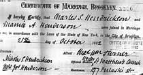
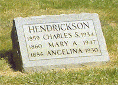

|
Mary
Ann Henderson was the second daughter of Captain Joseph Henderson.
She married Charles S. Hendrickson, had one child, Angelina, and
lived to be 87 years old. |
|
| Important
Facts |
|

| 1860 | Mary Ann (Mamie) Henderson was born in Brooklyn, New York. The daughter of Captain Joseph Henderson and Angelina Annetta Weaver. Source: 1865 NY State Census, Ward Nine of Brooklyn, in the county of Kings, NY. |  New York Map |
| July 26, 1870 | The 1870 US Federal Census lists Joseph (46), Angelina (38), Sarah R. (20), Maurice D. (18), Joseph Jr. (16), Mary Ann (10), Angelina A. (8), and Alexander D. (6). Source: 1870 US Census, 21-WD Brooklyn, Kings County, New York, Series: M593, Roll: 961, Part: 1, Page: 349A. | |
| 1880 | The 1880 U.S. Census lists Joseph (52) and Angelina (48) living at home with their three daughters, Sarah R. (30), Mary A. (20), Angelina A. (18), and three sons, Maurice (28), Joseph (26), and Alexander (15). Source: 1880 US Federal Census for 983 Myrtle Ave., Kings (Brooklyn), New York City-Greater, New York. | |
| October 21, 1882 | Mamie A. Henderson married Charles Smith Hendrickson at the St. Mathews Church in Brooklyn, New York. Witnesses to the marriage were Mrs. Joseph Angelina Henderson and Mr. Nicholas S. Hendrickson. Charles's occupation was listed as commission merchant in New York City. Joseph and Angelina Henderson were listed as father and mother of the bride. Source: Certificate of Marriage, Brooklyn #3306. |
 Certificate of Marriage |
| 1887-1909 | Mary Ann and Charles S. Hendrickson were listed at the 633 Willoughby address, which would indicate they both lived with Joseph and Angelina. Source: "Mary's Family Connections," 1979, pg. 100. | |
| July 1886 | Angie Hendrickson was born in Brooklyn, New York. Source: "Mary's Family Connections," 1979, pg. 90. | |
| October 7, 1890 | Her father, Joseph Henderson, died at 633 Willoughby Avenue, Brooklyn, New York and was buried in the Green-Wood Cemetery in Brooklyn, New York. Lot 13244, Section 88. Source: Brooklyn Municipal Archives (Death Certificate #15592). | |
| 1888-90 | Mary Ann and Charles S. Hendrickson are listed as living at 639 Willoughby avenue, occupation as .merchant on 196 Duane N. Y.Source: Ancestry.com, Brooklyn, New York Directories, 1888-1890. |
|
|
1897 |
The following listing was entered in the Brooklyn directory: HENDRICKSON Chas. S. com mer 198 Duane N. Y. h 639 Wil'by ave. Source: 1897-98 LAIN'S DIRECTORY Brooklyn. |  Brooklyn Map |
June 5, 1900 |
The 1900 U.S. Census lists Charles S. Hendrickson (41), Mary (39), and Angelina (13), living at 639 Willoughby Avenue. Source: 21 Ward Brooklyn Borough, Kings County, New York, Series: T623, Microfilm:1058, Book: 2, Page: 96. | |
|
1909 |
Charles and Mary Ann Henderson were still listed at the Willoughby address when Mary Ann's mother, Angelina W. Henderson died. Source: "Mary's Family Connections," 1979, pg. 100. | |
1910 |
Charles Hendrickson was listed as "Chas. Hendrickson com mer Duane c Washn Mhtn h 639 Wilby av." Source: 1910 Brooklyn City Directory. | |
Nov. 12, 1911 |
Members of the Fort Greene Bridge Whist Club played at Mrs. C. W. hendrickson on 639 Wilooughby Avenue. Cards were played from 2:30 until 4:30. Source: Brooklyn Eagle Newspaper. | |
April 20, 1910 |
The 1910 U.S. Census lists Charles S. Hendrickson (50), Mary (49), and Angelina (23), living at 639 Willoughby Avenue. Source: 21 Ward Brooklyn Borough, Kings County, New York, Series: T624, Microfilm Roll: 969, Book: 1, Page: 10B. |
|
January 12, 1920 |
The 1920 U.S. Census lists Charles S. Hendrickson (52), Mary (50), Angelina (30), and Maurice Henderson (60) as brother-in-law, living on 639 Willoughby Avenue. Source: U.S. Census for Brooklyn, New York, Kings County, Series: T625 Roll: 1153 Page: 110. | |
| Maurice D. Henderson, Mary Ann, Charles, and Angie Hendrickson would come to the Henderson's in Suffern for Thanksgiving. Source: "Mary's Family Connections," 1979, pg. 90. | ||
January 26, 1923 |
Her brother, Alexander D. Henderson was issued a passport to travel abroad and Mary A. Hendrickson signed an affidavit as his sister. Her residence was listed as 76 Sherman Ave., Glen Ridge, N. J. Source: U.S. Passport Applications, 1795-1925. | Source: Green-Wood Cemetery signed authorizations for interments. |
November 15, 1923 |
Mary Ann's older brother, Maurice D. Henderson died in New Jsersey and was buried at the Green-Wood Cemetery in the family plot. Her yonger brother, Alexander D. Henderson wrote a letter to the Green-Wood Cemetery asking them to open the grave for the remains of their brother Maurice Henderson. Source: Green-Wood Cemetery signed authorizations for interments. | |
1925 |
The the New York City directory lists tje Hendrickson family address as: "Hendrickson, Chas S com mer 322 Washn h Glen Ridge N J." Source: New York, City Directories. | |
April 8, 1930 |
Chas S. Hendrickson (71), Mary A. (69), Angeline (43) are listed as living on 76 Sherman Ave. in New Jersey. Charles is listed as proprietor, Wholesale Produce. Source: 1930 United States Federal Census, Glen Ridge, Essex, New Jersey; Roll: 1330; Page: 5B; Enumeration District: 431; Image: 441.0. | |
October 12, 1930 |
Mrs. Hendrickson wrote a letter to the Green-Wood Cemetery on Van Tassel & Roy, Inc. funeral Home stationary (Bloomfield, N.J.), instructing the Green-Wood Cemetery to "Kindly arrange to re-open grave in which the remains of Angelina Hendrickson, placed, Oct. 12, 1930, in lot #13244, for interment of my husband, Charles S. Hendrickson. We are planning to arrive at cemetery office Wednesday morning, am. 10th between 10:30 and 10:45 o'clock." Source: Green-Wood Cemetery signed authorizations for interments. |
 Angelina Hendrickson Green-Wood Cemetery |
October 12, 1930 |
Mary Ann's daughter, Angelina Hendrickson died and was buried in the family plot at the Green-Wood Cemetery at 500 25th St., Brooklyn, New York - Lot 13244, Section 88. Source: Green-Wood burial inquiry results. | |
January 7, 1934 |
Charles Smith Hendrickson died at his home, 76 Sherman Av., Glen Ridge, N. J. after a long illness. He was 74 years old. His window, Mary A. Hendrickson, survived his death. Source: January 8, 1934 edition of the New York Times, pg. 17, ProQuest Historical Newspapers. | |
Jan 8, 1934 |
Mrs. Hendrickson wrote a letter to the Green-Wood Cemetery on Van Tassel & Roy, Inc. funeral Home stationary (Bloomfield, N.J.), instructing the Green-Wood Cemetery to "Kindly arrange to re-open grave in which the remains of Angelina Hendrickson, placed, Oct. 12, 1930, in lot #13244, for interment of my husband, Charles S. Hendrickson. We are planning to arrive at cemetery office Wednesday morning, am. 10th between 10:30 and 10:45 o'clock." Source: Green-Wood Cemetery signed authorizations for interments. | |
Jan 10, 1934 |
Funeral services and internment for Charles Smith Hendrickson were at the Greenwood Cemetery, Brooklyn, NY. at the family plot Lot 13244, Section 88. Source: Green-Wood Cemetery Web site. |
 Hendrickson Tombstone Green-Wood Cemetery |
Feb. 4, 1934 |
Will for Probate notice for Charles Hendrickson to wife, Mary A. Hendrickson of Essex County, New Jersey was listed in the New York Times. Source: Feb. 4, 1934; ProQuest Historical Newspapers The New York Times pg. 33. | |
November 1, 1944 |
Mrs. Mary A. Hendrickson, of 9 Woodland Road, Glen Ridge, N. J., wrote a letter to the Green-Wood Cemetery on George Van Tassel funeral Home stationary (Bloomfield, N. J.), saying: "This will confirm my instructions to George Van Tassel, director of the Community Funeral Home, in Bloomfield, N. J., that upon my death my remains are to be placed in the grave with my late husband, Charles S. Hendrickson and late daughter, Angelina Hendrickson in lot #13244 in Greenwood cemetery, Brooklyn, N. Y." Source: Green-Wood Cemetery signed authorizations for interments. | |
February 28, 1947 |
Mary Ann Hendrickson died. Source: The Green-Wood Cemetery Catalog of Heirs 2993. | |
Mar 1, 1947 |
Mary Ann Hendrickson died and was buried in the family plot at the Green-Wood Cemetery at 500 25th St., Brooklyn, New York - Lot 13244, Section 88. Source: Green-Wood burial inquiry results. |

Last update: Saturday, October 3, 2009